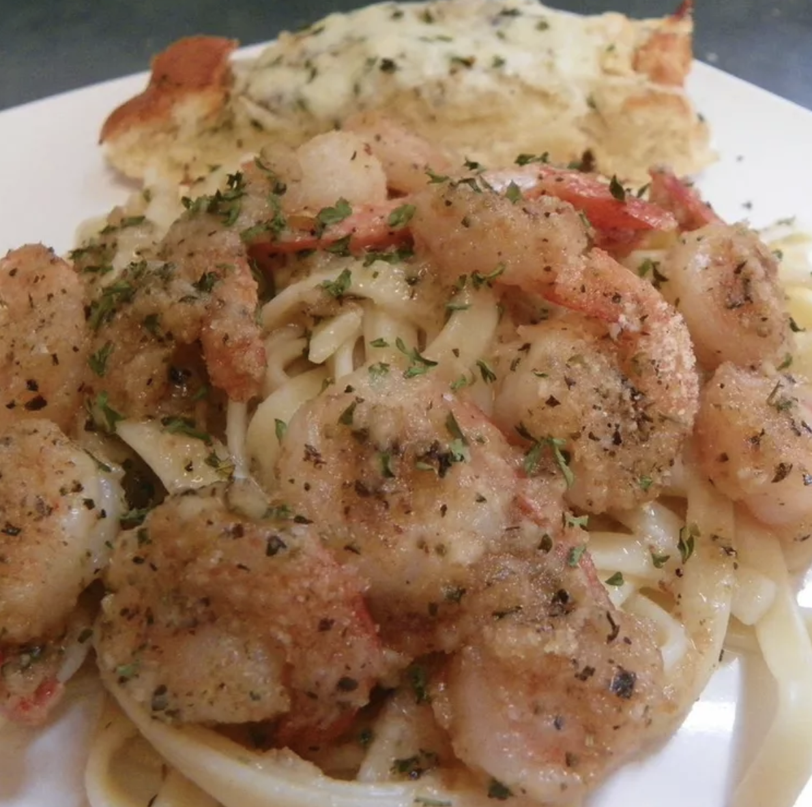

Shrimp Scampi

Description
A delicious and quick way to enjoy shrimp - even on a busy weeknight!
Ingredients
- 1 pound linguini pasta
- ¼ cup butter
- 5 cloves garlic, minced
- 1 pound medium shrimp - peeled and deveined
- 1 cup bread crumbs
- ½ cup white wine
- 1 lemon, juiced
- ¼ cup light olive oil
Steps
- Preheat oven to 350 degrees F (175 degrees C).
- Bring a large pot of salted water to a boil, add pasta, and cook until al dente. Drain pasta, and set aside.
- In a large skillet, melt butter over medium heat. Add most of the garlic, keeping some for later. Coat the garlic completely with butter. Do not let the garlic brown. Add shrimp, and toss to coat. Immediately remove pan from heat; shrimp will not be cooked yet.
- Sprinkle the shrimp with breadcrumbs (enough to coat the shrimp), and transfer the entire mixture to a medium casserole dish. Pour wine and the lemon juice over the shrimp. Cover, and bake at 350 degrees F (175 degrees C) for 10 minutes.
- Remove cover, and bake an additional 5 minutes.
- In a small saucepan heat olive oil with remaining garlic. Toss the pasta with the olive oil and garlic mixture. Serve the shrimp over the pasta with additional lemon slices on the side.